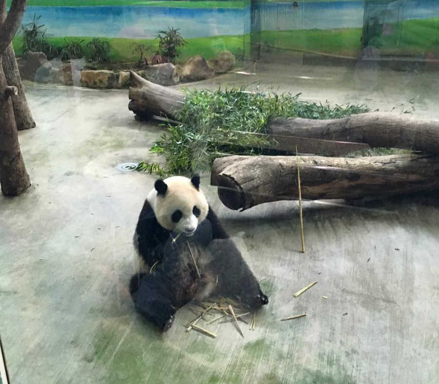
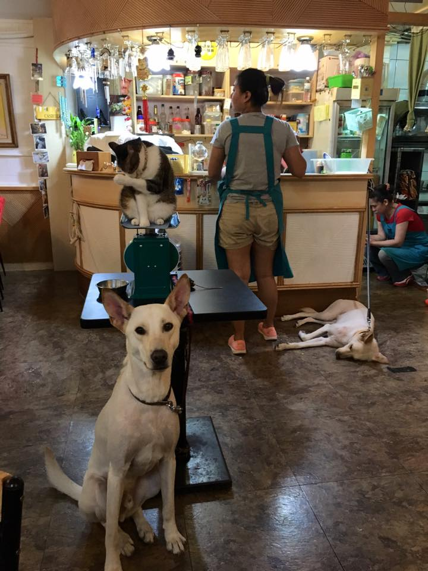
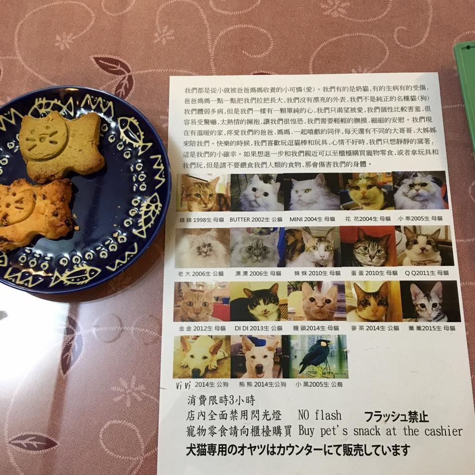
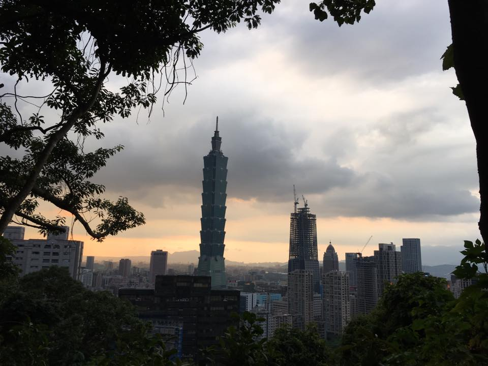
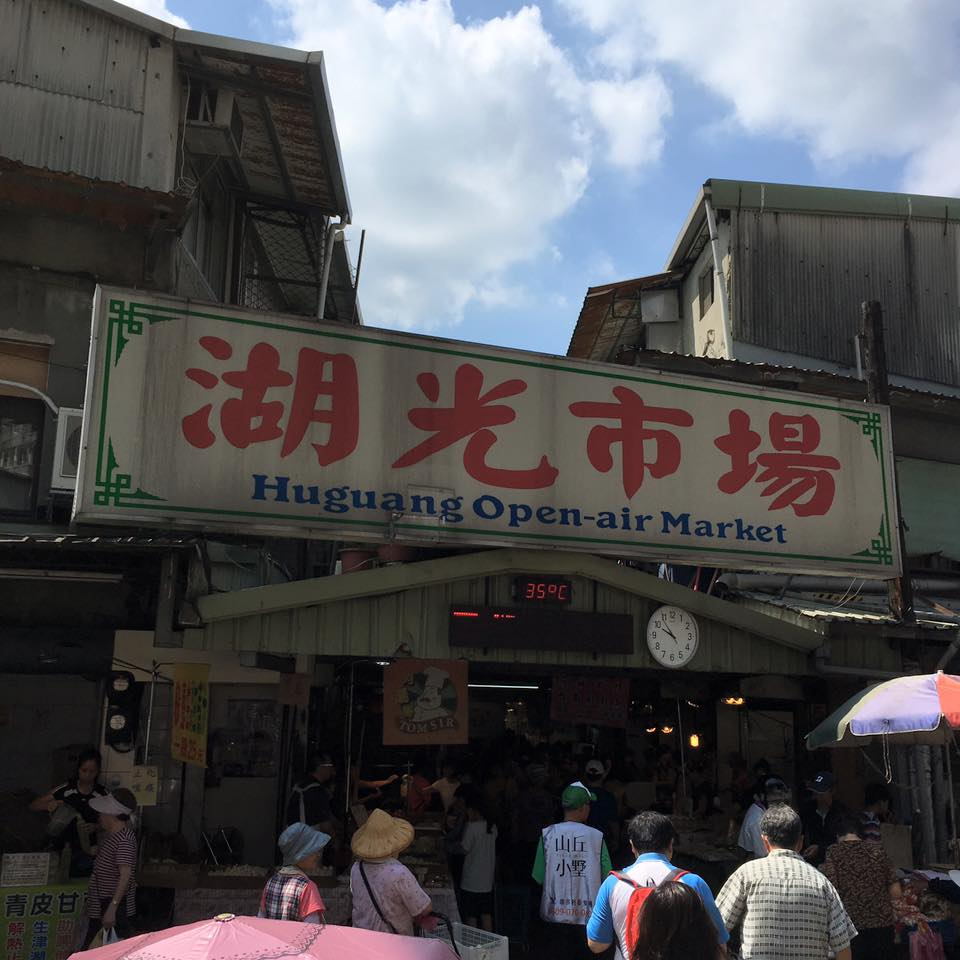
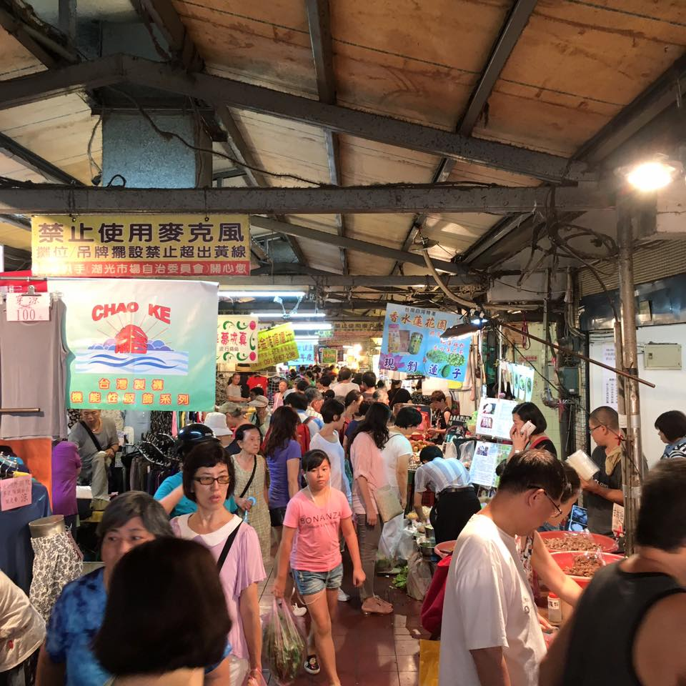
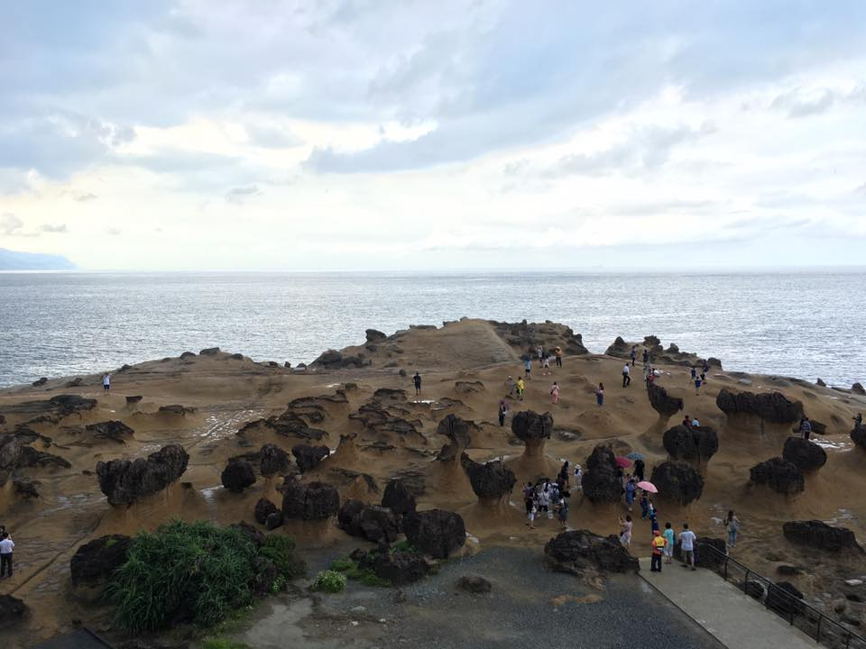
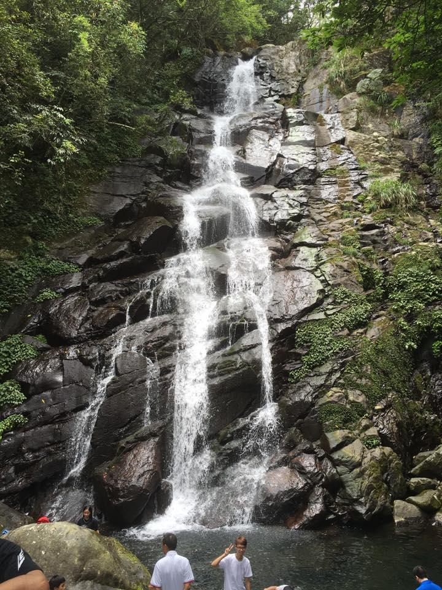

Taipei Zoo
On Monday my roommate and I went to the Taipei Zoo. The admission was cheap (60NT ~ $2 USD). The weather was SO HOT though! The heat index was 109º when I checked, the humidity was even higher than usual (if that's possible), and to make things worse, it didn't rain in the afternoon. It was definitely my most sweaty day in Taiwan so far. We were able to easily see the pandas since not many people were at the zoo on a very hot Monday afternoon, which was nice. The rest of the zoo was alright, but I'm used to the Omaha zoo so it wasn't as good as I thought it would be.
Cat Cafe
I went to Taipei's original cat cafe, 小貓花園咖啡, right off the Zhishan MRT station. There were 2 dogs, a bird, and about 15 cats! The cats didn't really care too much about getting pet (probably because they get pet all day), but one of the dogs loved to play with his two toys. The menu was a bit pricey but totally worth it to pet the cats and dogs. It was really relaxing, especially because I miss my family's dog from home!

Elephant Mountain
I decided to climb Elephant Mountain during the evening because it would be less hot and I could also see the sun set over Taipei. The climb was easy because there are steps all the way up, but at the same time difficult because it was July in Taiwan and any physical activity is so tiring in the heat and humidity. I made it up to an area where you could view the Taipei skyline. There were more steps to go higher but I was extremely hot and sweaty so I just watched the sunset from the viewing area. It was good exercise and really fun so I definitely plan to climb Elephant Mountain again, but this time go to the very top!
Traditional Open Air Market
Not only are Taiwan's night markets the best (I go a few times every week), but this weekend I went to a traditional open air market and it was also great! It's like a farmer's market, except the meat and produce is cheaper than what you find in a grocery store. It's loud, crowded, and lots of fun.

North Coastal Area
Over the weekend, my host family took my roommate and me to some of the North coastal areas, mostly Sanzi and Jinshan.
Yehliu Geopark was amazing and beautiful. It features some rare rock formations that have naturally formed near the ocean. However, a giant rain blew in suddenly and we were so drenched that we had to buy all new clothes!
We saw quite a few other places, like the Shimen Arch, a white shell beach, Shimen Wedding Pictures Plaza, and a night market. On Sunday we hiked up a very rocky mountain to see a waterfall that tourists don't know about because it's very remote with no bus routes leading towards it. The beaches were very beautiful, but of course crowded.
A link to my full album of Taiwan photos can be found here. Keep checking back for weekly updates!
Questions? Comments? Don't hesitate to contact me!